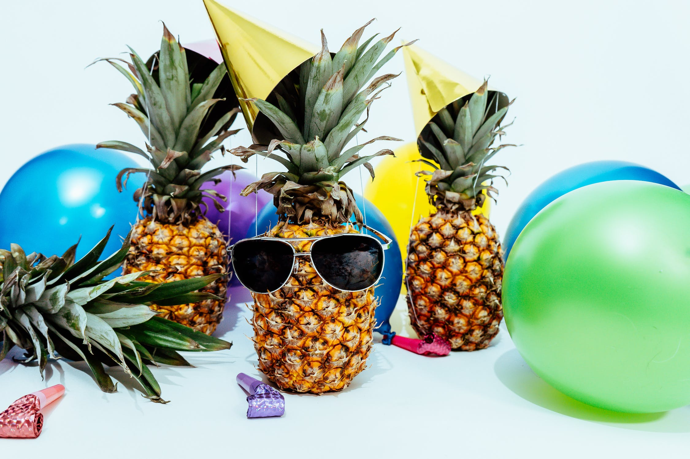
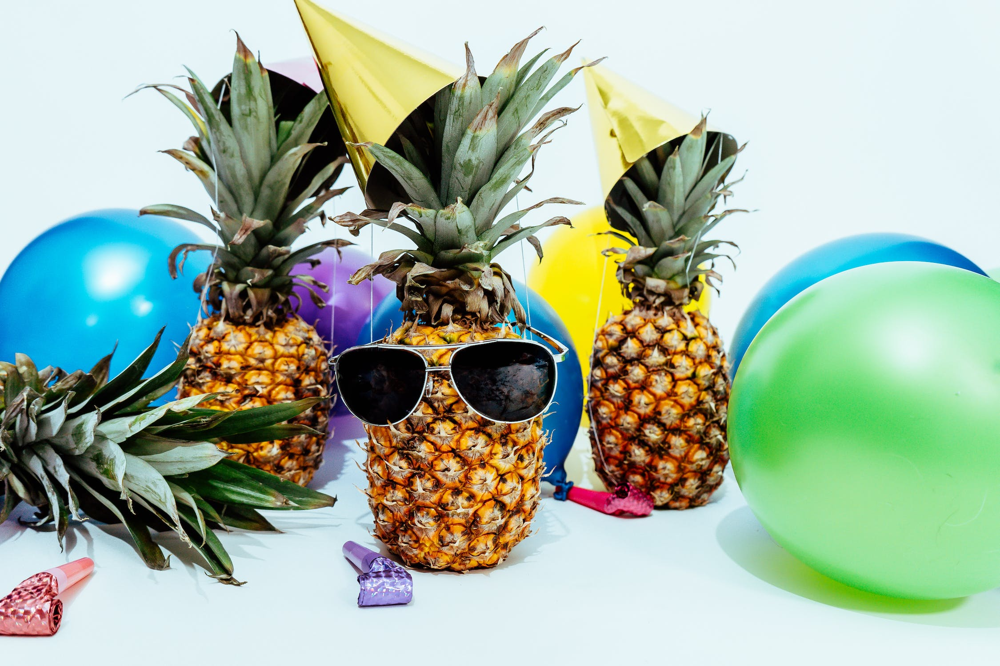

Summer
Juicy Summer Eats
include Avocadoes,
Bell peppers,
Berries (such as blackberries,
blueberries, raspberries),
Cantaloupe and melons,
Cherries,
Corn,
Cucumbers,
Eggplant,
Green Beans,
Honeydew Melon,
Kiwi Fruit,
Okra,
Peaches,
Watermelon.
 

Fall
Fall for the fresh:
Apples,
Beets,
Broccoli,
Cauliflower,
Cranberries,
Grapes,
Kale,
Potatoes,
Pumpkin,
Rutabagas,
Turnips
Winter Squash.
Winter
Winters bounty of:
Oranges,
Parsnips,
Beets
Brussel Sprouts,
Grapefruit,
Kiwi Fruit,
Leeks,
Lemons,
Pears,
Pumpkin,
Rutabagas,
Sweet Potatoes and Yams.
Spring
I'm sprung for:
Apricots,
Asparagus,
Broccoli,
Green Beans,
Mangoes,
Mushrooms,
Peas,
Radishes,
Spinach,
Strawberries,
Swiss Chard.